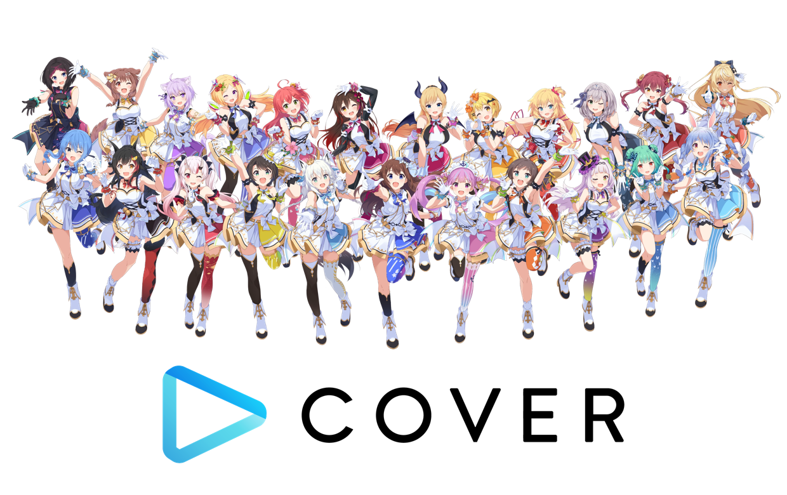

2020년 4월에 데뷔했으며 팬들 사이에서는 'AREA15'이라고 불리우고 있다.
데뷔 1주년을 기념해서 3명 모두 3D 데뷔가 확정되었으며, 이르면 2021내에 일본에서 촬영해 공개하는 것이 목표였다.
그러나 2021년 하반기에 잠잠해지던 코로나의 확산세가 오미크론 변이로 인해 다시 강해지면서 3D 데뷔는 기약없이 연기되고 말았다.
이후 홀로라이브 3rd fes "Link your wish" 라이브 콘서트에 홀로라이브 ID 1기 멤버들도 참여하는 것이 결정되었고, 2022년 3월 19~20일 2일 동안 1기생 세명 모두 오랜 설움을 딛고 3D 모델을 받아 멋진 공연을 선보였다.
ID 멤버들의 노래 실력은 아는 사람들 사이에서는 이미 유명했지만, JP 멤버들과 달리 그동안 정식 3D 라이브 방송에 참여하지 못해 무대에 직접 선 것은 처음이었기 때문에 많은 팬들이 ID 멤버들의 재능을 뒤늦게 확인하고 크게 놀라게 되었다.

2020년 12월에 데뷔했다.
hololive와 자바어로 숫자 2를 의미하는 loro를 합해 지은 HOLORO라는 이름으로 불리기도 한다.
원래는 공식적으로 지어진 이름이 아니었지만 공식 유튜브 채널이나 굿즈에도 HOLORO라는 이름이 쓰이는 등 점차 정식 명칭으로 자리잡고 있다. 그리고 데뷔한지 1년이 지났지만 3D모델은 아직 제작되지않았다 그래서 1기생들과 달리 3rd fes는 엑스포 한정으로만 참여한다고한다.
2022년 3월 24일, 쿠레이지 올리가 홀로ID 두 번째이자 2기생 중 첫 번째로 구독자 100만 명을 돌파했다.
홀로라이브 3rd fes에서 ID 1기생 멤버들의 성공적인 3D 데뷔에 힘입어 ID로의 유입이 증가하는 상황에서 데뷔를 하게되어 많은 관심을 받았다. Hololive에 HERO와 숫자 3을 결합하여 HoloH3RO 라고 통칭한다.
4개국어에 능숙해 해외의 많은 팬들에게 관심을 받은 제타, 쿨하고 성숙한 이미지를 보이는 한편 하드코어한 게임을 즐기는 카엘라, 데뷔부터 오리지널 송을 공개하고 기타 연주와 프로그래밍 등 다재다능한 모습을 보여주는 코보 등 맴버들의 개성이 뚜렷하게 드러나 많은 인기를 모으며 빠르게 성장하고 있다.
특히 대체로 털털하면서도 매콤한 맛이었던 기존의 홀로ID에는 없었던 새로운 캐릭터성들이 이들을 통해서 비로소 확충되었다.
제타는 홀로ID의 사카마타라는 평을 들었을 정도로 사근사근한 말투에다 JP스러운 애교가 많은 성격이고, 카엘라는 홀로ID에서 처음으로 엄마 캐릭터의 포지션을 갖게 되었으며, 코보 또한 홀로ID 최초의 꼬맹이 캐릭터성을 보여주고 있다.
언어능력자들로 포진해 있는 홀로ID 선배들과 달리, 3기생들은 상대적으로 다국어 방송에 약하다.
그나마 제타는 영어가 유창하지만 일본어는 루이와 공부 방송을 하면서 배우고 있는 중이고, 카엘라와 코보는 영어로 의사소통은 가능하지만 원어민 정도까지는 아니며, 특히 일본어는 초급 수준이어서 의사소통에 지장을 받는 정도이다.
단 이것은 단점이기보다는 오히려 역으로 방송 콘텐츠로 승화되고 있는 중. 아예 소통 자체가 안 되면 언어의 벽이 생겨서 방송 자체가 힘들어지지만 3기생들은 조금씩이나마 상대방 언어를 구사할 수는 있기 때문에 도리어 그 미숙한 외국어가 방송인으로서의 매력이 되고 있으며 많은 콜라보의 계기가 되고 있다.
